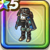

大海の探求者コート下
攻略班 8.5点 / 眠り耐性+5%呪い耐性+5%眠り耐性+5%すべての状態異常耐性+2%呪い耐性+5%スキルの斬撃・体技ダメージ+2%【海賊】会心率+2%【レンジャー】会心率+2%会心率+2%
くわしい特徴
【レベル別習得スキル】 Lv1眠り耐性+5% Lv5すばやさ+7 Lv8呪い耐性+5% Lv10スキルの斬撃・体技ダメージ+2% Lv12【海賊】会心率+2% Lv12【レンジャー】会心率+2% Lv15会心率+2% Lv18眠り耐性+5% Lv20すべての状態異常耐性+2% Lv20呪い耐性+5% Lv23守備力+5 Lv25さいだいMP+5 【限界突破スキル】 1凸攻撃力+7 2凸すばやさ+10 3凸守備力+5 4凸さいだいHP+10